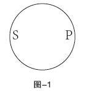
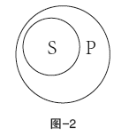
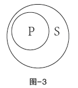
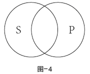
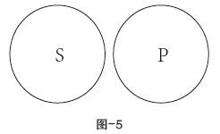
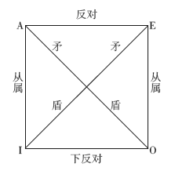
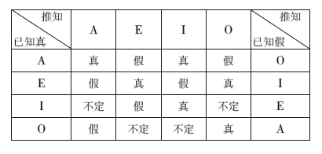

为了后面要讲的直接推理，首先需要了解直言判断的相关知识。
反映对象上有或不具有某种属性的判断，叫直言判断。例如：
台湾是中国的宝岛。
白求恩不是中国人。
有的金属是液体。
任何事物都不是固定不变的。
直言判断有四个组成部分：主词、宾词、联结词和量词。
主词是表示思想对象的那个概念。如上述例子中的“台湾”“白求恩”“金属”“事物”，通常用S表示。
宾词是揭示判断对象的某一方面属性的那个概念，用来表示对象是否具有的属性。如上述例子中的“中国的宝岛”“中国人”“液体”“固定不变的”，通常用P表示。
联结词是主词和宾词的媒介，是判断的对象具有或不具有宾词所说明的属性，即肯定或否定，通常用“是”或“不是”表示。
量词是表示主词的数量或范围的那个概念。例如“有的”“有些”等是特称量词；“一切”“所有”等是全称量词。
通常把直言判断归结为四种形式，分别用A、E、I、O表示：
全称肯定判断，用所有S是P表示，简称SAP；
全称否定判断，用所有S不是P表示，简称SEP；
特称肯定判断，用有些S是P表示，简称SIP；
特称否定判断，用有些S不是P表示，简称SOP。
如断定特称肯定判断，就否定了与其相反的全称判断。例如：
断定“有的鱼是用肺呼吸的”，那就否定了“所有的鱼都不是用肺呼吸的”。
若断定“有的天鹅不是白色的”，那就否定了“所有的天鹅都是白色的”。
直言判断的主词和宾词叫作名词。在直言判断中，如果断定名词的全部外延，这个名词就是周延的，如果只断定这个名词的部分外延，这个名词就是不周延的。
例如：
（1）所有的机械运动形态都可转化为热。
（2）有的金属都不是固体。
例（1）中的“机械运动形态”是周延的，因为断定了这个概念的全部外延；而例（2）中的“金属”这个名词就是不周延的，因为只断定这个概念的部分外延。
主词和宾词有五种不同的关系：
（1）S与P重合

图-1
（2）S包含在P中

图-2
（3）P包含在S中

图-3
（4）S与P交叉

图-4
（5）S与P全异

图-5
A、E、I、O四种类型直言判断的名词周延性可归结如下：
全称判断主词周延、特称判断主词不周延、肯定判断宾词不周延、否定判断宾词周延。
直言判断之间的对当关系，是指有相同的主词和宾词的A、E、I、O四种类型判断之间的真假关系，这就是下面的逻辑关系：

这个方阵的每一条线，都表示两种判断之间的一定关系：
（1）反对关系——A与E；
（2）从属关系——A与I、E与O；
（3）矛盾关系——A与O、E与I；
（4）下反对关系——I与O。
以上四种关系的真假可以用一个直言判断的真值表来表示：

由已知判断的真来推断其他判断的真假，先看左边第一行，找到已知是真的那个判断；再看上面第一行，找到所要推知的那个判断；然后，在两行交叉处就可找到答案。由已知假来推，则先看右边第一行，查法与前同。
直接推理是由一个判断推出另一个新判断的推理。在传统逻辑中，直接推理有两种：
根据对当关系的直接推理；
根据判断变形的直接推理。
（1）由一个判断之真推出另一个判断之假。反对关系和矛盾关系属于这种关系。例如：
若断定“一切知识都是来源于实践”是真的，那么就可推出“一切知识都不是来源于实践”是假的，也能推出“有些知识不是来源于实践”是假的。
（2）由一个判断之假推出另一个判断之真。下反对判断和矛盾判断属于这种关系。例如：
若“有些客观事物是固定不变的”是假的，可推出“有些客观事物不是固定不变的”是假的，也能推出“任何客观事物都不是固定不变的”是真的。
（3）由一个判断之真推出另一判断之真。从属判断属于这种关系。例如：
若“世界上一切事物都是充满矛盾的”是真的，就能推出“世界上有些事物是充满矛盾的”是真的。
（4）由一个判断之假推出另一个判断之假。从属判断属于这种关系。例如：
若“有些事物是固定不变的”是假的，就可推出“所有事物都是固定不变的”也是假的。
通过改变一个判断的形式，而得到一个新判断的推理，就是根据判断变形的直接推理。有换质法、换位法、换质位法和附性法。
通过改变前提判断的质，推出一个新判断的直接推理。例如：“弱国不是不可战胜强国的。”
经过换质可推出：“弱国是可以战胜强国的”这一新判断。
原判断是一个否定判断，换质后变成了肯定判断。新判断的系词和原判断相反，而新判断的宾词是原判断的宾词的矛盾概念。因此换质法就是由一个判断推出与之等值的、并在质上相反的新判断。
等值的意思是指A、B两个判断，若A真B也真，若A假B也假。
换位法就是通过改变原判断主宾词的位置，而得出一个新判断的推理。即原判断的宾词作新判断的主词；而原判断的主词作新判断的宾词。例如：
“金属都是导电体。”
换位后得出：“有些导电体是金属。”
换位规则有二：一是不改变判断的质，原判断是肯定的（或否定的），新判断也应是肯定的（或否定的）；二是原判断中不周延的名词换位后不得变为周延。例如：
“有些发光的不是金子。”如果换位得出“金子不是发光的”。这个新判断是错误的，因为违反换位规则，主词在前提中不周延，在新判断中变成周延了。
换质位法就是换质换位两种方法联合应用。其程序是：先换质，后换位。例如：
①真金是不怕火炼的。
换质得：
真金不是怕火炼的。
再换位得：
怕火炼的不是真金。
②真理是不怕批评的。
换质得：
真理不是怕批评的。
再换位得：
怕批评的不是真理。
（1）美国作家马克·吐温，在一次答记者问时说：“国会中有些议员是狗婊子养的。”
这句话很快被记者公布于世。议员们大为恼火，强烈要求马克·吐温公开道歉并予以澄清，否则将提起诉讼。
不久，马克·吐温在报上刊登的道歉是：
鄙人日前确实说过，国会中有些议员是狗婊子养的，此话不妥，应修改为：“国会中有些议员不是狗婊子养的。”
马克·吐温的两个判断：
国会中有些议员是狗婊子养的。
国会中有些议员不是狗婊子养的。
——这是下反对关系，当I真时O真假不定。
（2）一个财主住在一个小岛上，家里经常丢东西。他到处讲：
“这个小岛上的人都是贼。”
小岛总督告诫他：“不要这样讲，你不也是岛上的人吗？你是贼吗？”
财主连忙说：“我怎么能是贼呢？我还偷自己的东西？”
稍稍整理一下财主的两个判断：
“岛上人都是贼。”
“岛上人有的不是贼。”
——只要O判断是真的，那么A判断就一定是假的。
（3）古时候，有个和尚杀了人，县太爷下令把全县剃光头的人统统抓起来。有人问“剃光头何罪？”县太爷这样推理：
“和尚是剃光头的，所以剃光头的就是和尚。”
“既然是剃光头的和尚杀了人，就应当把剃光头的都抓起来。”
（4）再比如：
① 猴子的屁股是红的。
红的是猴子的屁股。
② 英雄是好色的。
好色的是英雄。
——且不说前提真假，其结论无疑是荒唐的，问题出在违反了换位规则，换位前不周延的概念换位后变成周延了。